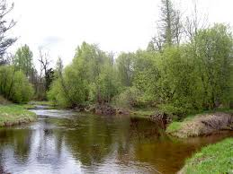
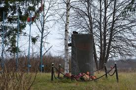
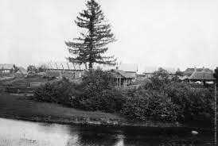
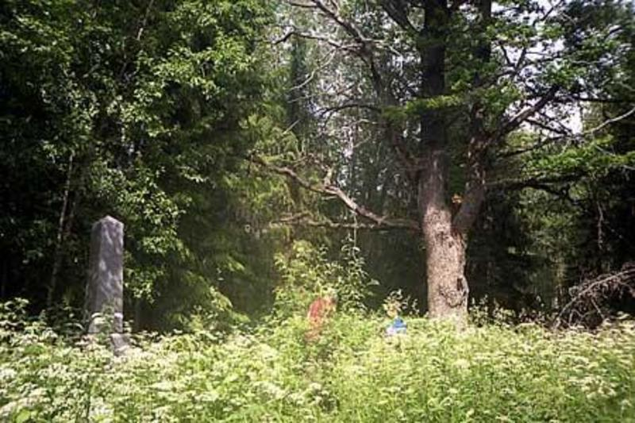
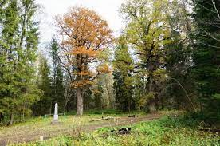
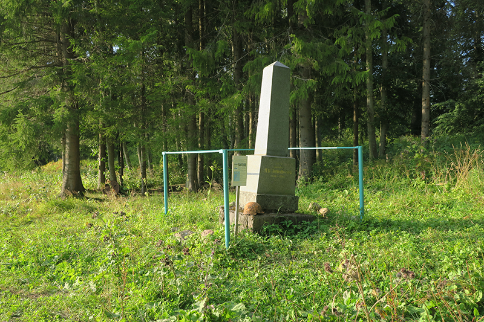
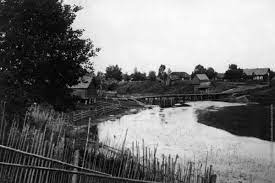
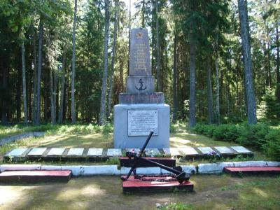
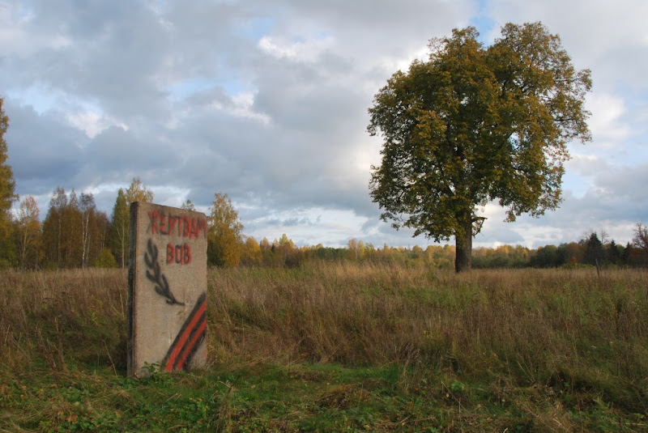

Деревня Усть-Рудица
Краткая сводка:
Усть-Рудица — упразднённая деревня в Лопухинском сельском поселении Ломоносовского района Ленинградской области. Бывшая усадьба, позднее деревня при слиянии рек Лопухинка (ранее называлась Рудицей, ныне это название носит один из притоков Лопухинки) и Чёрная, принадлежавшая Михаилу Ломоносову.
Фотографии деревни:









М.В. Ломоносов о деревне Усть-Рудица:
«… Я зрю здесь в радости довольствий общий вид,
Где Рудица, вьючись, сквозь каменья журчит,
Где действует вода, где действует и пламень,
Чтобы составить мне или превысить камень
Для сохранения геройских славных дел,
Что долг к Отечеству изобразить велел…»